Note: The assignment is due on Oct 25, 2021. Send your code and html/pdf report to dlouha@cs.cas.cz (and to martinkova@cs.cas.cz in copy).
Done.
Done.
Note: If you meet any issues, contact the the TA or the instructor before 8 AM of the due date.
Done.
Maturitní zkoušky Jaro - 2019 and click on Matematika at the very botom in the Neagregovaná položková data section. This will download a .xls file with the item data. You may view the file and its decription which is avalable on the webpage. Load the data and prepare it for the analysis. Check item wording (include the link where it can be found).# read data
data(BFI2, package='ShinyItemAnalysis')summary()
summary(BFI2)## i1 i2 i3 i4 i5 i6 i7 i8 i9 i10 i11 i12
## Min. :1.00 Min. :1.000 Min. :1.000 Min. :1.000 Min. :1.000 Min. :1.000 Min. :1.000 Min. :1.000 Min. :1.00 Min. :1.000 Min. :1.000 Min. :1.000
## 1st Qu.:3.00 1st Qu.:4.000 1st Qu.:2.000 1st Qu.:2.000 1st Qu.:2.000 1st Qu.:3.000 1st Qu.:4.000 1st Qu.:1.000 1st Qu.:2.00 1st Qu.:3.000 1st Qu.:3.000 1st Qu.:2.000
## Median :4.00 Median :4.000 Median :3.000 Median :3.000 Median :3.000 Median :4.000 Median :4.000 Median :2.000 Median :3.00 Median :4.000 Median :4.000 Median :3.000
## Mean :3.62 Mean :4.102 Mean :3.053 Mean :3.063 Mean :3.213 Mean :3.591 Mean :4.051 Mean :2.344 Mean :2.68 Mean :3.939 Mean :3.641 Mean :3.003
## 3rd Qu.:4.00 3rd Qu.:5.000 3rd Qu.:4.000 3rd Qu.:4.000 3rd Qu.:4.000 3rd Qu.:4.000 3rd Qu.:5.000 3rd Qu.:3.000 3rd Qu.:4.00 3rd Qu.:5.000 3rd Qu.:4.000 3rd Qu.:4.000
## Max. :5.00 Max. :5.000 Max. :5.000 Max. :5.000 Max. :5.000 Max. :5.000 Max. :5.000 Max. :5.000 Max. :5.00 Max. :5.000 Max. :5.000 Max. :5.000
##
## i13 i14 i15 i16 i17 i18 i19 i20 i21 i22 i23 i24
## Min. :1.000 Min. :1.000 Min. :1.000 Min. :1.000 Min. :1.000 Min. :1.000 Min. :1.000 Min. :1.000 Min. :1.00 Min. :1.000 Min. :1.000 Min. :1.000
## 1st Qu.:3.000 1st Qu.:2.000 1st Qu.:3.000 1st Qu.:2.000 1st Qu.:4.000 1st Qu.:2.000 1st Qu.:2.000 1st Qu.:2.000 1st Qu.:2.00 1st Qu.:3.000 1st Qu.:2.000 1st Qu.:2.000
## Median :4.000 Median :3.000 Median :4.000 Median :3.000 Median :4.000 Median :3.000 Median :3.000 Median :4.000 Median :3.00 Median :4.000 Median :3.000 Median :3.000
## Mean :3.628 Mean :3.017 Mean :3.548 Mean :2.939 Mean :4.015 Mean :3.317 Mean :3.068 Mean :3.395 Mean :2.95 Mean :3.988 Mean :2.755 Mean :2.889
## 3rd Qu.:4.000 3rd Qu.:4.000 3rd Qu.:4.000 3rd Qu.:4.000 3rd Qu.:5.000 3rd Qu.:4.000 3rd Qu.:4.000 3rd Qu.:4.000 3rd Qu.:4.00 3rd Qu.:5.000 3rd Qu.:4.000 3rd Qu.:4.000
## Max. :5.000 Max. :5.000 Max. :5.000 Max. :5.000 Max. :5.000 Max. :5.000 Max. :5.000 Max. :5.000 Max. :5.00 Max. :5.000 Max. :5.000 Max. :5.000
##
## i25 i26 i27 i28 i29 i30 i31 i32 i33 i34 i35 i36
## Min. :1.000 Min. :1.00 Min. :1.000 Min. :1.000 Min. :1.000 Min. :1.000 Min. :1.000 Min. :1.000 Min. :1.000 Min. :1.000 Min. :1.000 Min. :1.0
## 1st Qu.:3.000 1st Qu.:3.00 1st Qu.:3.000 1st Qu.:2.000 1st Qu.:2.000 1st Qu.:3.000 1st Qu.:2.000 1st Qu.:4.000 1st Qu.:2.000 1st Qu.:3.000 1st Qu.:3.000 1st Qu.:2.0
## Median :4.000 Median :3.00 Median :4.000 Median :3.000 Median :3.000 Median :4.000 Median :2.000 Median :4.000 Median :3.000 Median :4.000 Median :4.000 Median :3.0
## Mean :3.556 Mean :3.45 Mean :3.813 Mean :3.196 Mean :2.973 Mean :3.562 Mean :2.707 Mean :3.937 Mean :3.199 Mean :3.548 Mean :3.733 Mean :3.2
## 3rd Qu.:5.000 3rd Qu.:4.00 3rd Qu.:5.000 3rd Qu.:4.000 3rd Qu.:4.000 3rd Qu.:4.000 3rd Qu.:4.000 3rd Qu.:4.000 3rd Qu.:4.000 3rd Qu.:4.000 3rd Qu.:5.000 3rd Qu.:4.0
## Max. :5.000 Max. :5.00 Max. :5.000 Max. :5.000 Max. :5.000 Max. :5.000 Max. :5.000 Max. :5.000 Max. :5.000 Max. :5.000 Max. :5.000 Max. :5.0
##
## i37 i38 i39 i40 i41 i42 i43 i44 i45 i46 i47 i48
## Min. :1.000 Min. :1.000 Min. :1.000 Min. :1.000 Min. :1.000 Min. :1.000 Min. :1.000 Min. :1.000 Min. :1.000 Min. :1.000 Min. :1.000 Min. :1.000
## 1st Qu.:2.000 1st Qu.:3.000 1st Qu.:2.000 1st Qu.:4.000 1st Qu.:3.000 1st Qu.:2.000 1st Qu.:3.000 1st Qu.:2.000 1st Qu.:3.000 1st Qu.:3.000 1st Qu.:2.000 1st Qu.:2.000
## Median :3.000 Median :4.000 Median :3.000 Median :4.000 Median :4.000 Median :3.000 Median :4.000 Median :2.000 Median :4.000 Median :4.000 Median :4.000 Median :4.000
## Mean :3.157 Mean :3.578 Mean :2.796 Mean :4.002 Mean :3.418 Mean :2.829 Mean :3.872 Mean :2.684 Mean :3.912 Mean :3.533 Mean :3.294 Mean :3.342
## 3rd Qu.:4.000 3rd Qu.:4.000 3rd Qu.:4.000 3rd Qu.:5.000 3rd Qu.:4.000 3rd Qu.:4.000 3rd Qu.:4.000 3rd Qu.:4.000 3rd Qu.:5.000 3rd Qu.:4.000 3rd Qu.:4.000 3rd Qu.:4.000
## Max. :5.000 Max. :5.000 Max. :5.000 Max. :5.000 Max. :5.000 Max. :5.000 Max. :5.000 Max. :5.000 Max. :5.000 Max. :5.000 Max. :5.000 Max. :5.000
##
## i49 i50 i51 i52 i53 i54 i55 i56 i57 i58 i59 i60
## Min. :1.000 Min. :1.00 Min. :1.000 Min. :1.000 Min. :1.000 Min. :1.000 Min. :1.00 Min. :1.000 Min. :1.000 Min. :1.000 Min. :1.000 Min. :1.000
## 1st Qu.:2.000 1st Qu.:3.00 1st Qu.:2.000 1st Qu.:4.000 1st Qu.:3.000 1st Qu.:2.000 1st Qu.:3.00 1st Qu.:3.000 1st Qu.:2.000 1st Qu.:2.000 1st Qu.:2.000 1st Qu.:3.000
## Median :3.000 Median :4.00 Median :3.000 Median :4.000 Median :4.000 Median :3.000 Median :4.00 Median :4.000 Median :3.000 Median :3.000 Median :3.000 Median :4.000
## Mean :3.293 Mean :3.65 Mean :2.971 Mean :4.199 Mean :3.525 Mean :2.746 Mean :3.52 Mean :3.573 Mean :2.926 Mean :2.943 Mean :2.876 Mean :3.452
## 3rd Qu.:4.000 3rd Qu.:5.00 3rd Qu.:4.000 3rd Qu.:5.000 3rd Qu.:4.000 3rd Qu.:4.000 3rd Qu.:4.00 3rd Qu.:4.000 3rd Qu.:4.000 3rd Qu.:4.000 3rd Qu.:4.000 3rd Qu.:4.000
## Max. :5.000 Max. :5.00 Max. :5.000 Max. :5.000 Max. :5.000 Max. :5.000 Max. :5.00 Max. :5.000 Max. :5.000 Max. :5.000 Max. :5.000 Max. :5.000
##
## Gender Age Educ
## Min. :0.0000 Min. :15.00 Min. :2.000
## 1st Qu.:0.0000 1st Qu.:18.00 1st Qu.:2.000
## Median :0.0000 Median :20.00 Median :3.000
## Mean :0.4212 Mean :20.06 Mean :3.701
## 3rd Qu.:1.0000 3rd Qu.:22.00 3rd Qu.:5.000
## Max. :1.0000 Max. :26.00 Max. :8.000
## NA's :1010str()
str(BFI2)## 'data.frame': 1733 obs. of 63 variables:
## $ i1 : num 5 4 1 4 5 3 3 4 4 4 ...
## $ i2 : num 5 5 4 5 5 5 4 4 5 5 ...
## $ i3 : num 2 4 3 1 2 2 2 3 5 1 ...
## $ i4 : num 3 3 5 4 2 3 4 3 3 2 ...
## $ i5 : num 5 3 2 5 4 4 5 4 5 3 ...
## $ i6 : num 4 3 1 3 5 3 3 2 3 4 ...
## $ i7 : num 4 5 3 5 5 4 4 4 5 4 ...
## $ i8 : num 3 3 1 2 3 1 3 4 2 1 ...
## $ i9 : num 4 2 5 4 3 3 4 3 2 3 ...
## $ i10 : num 5 4 4 3 4 5 4 4 2 4 ...
## $ i11 : num 5 4 4 3 4 4 4 5 4 3 ...
## $ i12 : num 4 2 1 5 3 4 2 3 2 4 ...
## $ i13 : num 3 4 5 4 4 3 4 4 2 2 ...
## $ i14 : num 4 2 5 2 5 5 4 1 4 4 ...
## $ i15 : num 2 3 2 2 5 2 4 5 4 4 ...
## $ i16 : num 3 4 1 3 5 1 2 3 2 2 ...
## $ i17 : num 5 5 5 5 5 5 4 5 5 4 ...
## $ i18 : num 3 4 5 2 3 1 4 1 3 2 ...
## $ i19 : num 2 3 5 2 4 3 4 2 2 4 ...
## $ i20 : num 5 4 5 5 4 2 3 4 5 5 ...
## $ i21 : num 4 4 1 2 5 1 3 1 2 3 ...
## $ i22 : num 4 4 2 5 3 5 5 5 5 4 ...
## $ i23 : num 4 4 1 2 4 4 3 4 2 1 ...
## $ i24 : num 3 2 5 3 2 2 2 4 2 2 ...
## $ i25 : num 5 2 3 4 4 1 2 3 4 5 ...
## $ i26 : num 4 4 1 3 4 3 4 5 2 4 ...
## $ i27 : num 4 2 1 5 4 4 3 4 4 5 ...
## $ i28 : num 5 4 4 4 4 3 4 4 2 2 ...
## $ i29 : num 5 3 5 2 4 4 5 2 2 2 ...
## $ i30 : num 5 4 2 3 4 2 5 5 5 4 ...
## $ i31 : num 3 5 1 2 4 1 2 2 2 2 ...
## $ i32 : num 5 5 3 5 5 4 4 4 3 4 ...
## $ i33 : num 4 5 5 2 3 2 4 1 2 1 ...
## $ i34 : num 4 4 5 5 5 2 5 3 2 4 ...
## $ i35 : num 5 5 5 5 5 3 5 3 5 5 ...
## $ i36 : num 4 3 5 3 4 3 3 1 4 3 ...
## $ i37 : num 3 4 2 5 2 2 4 5 5 4 ...
## $ i38 : num 4 4 1 2 5 4 4 3 4 4 ...
## $ i39 : num 2 1 5 3 4 5 4 3 1 3 ...
## $ i40 : num 4 4 5 4 4 3 4 4 4 4 ...
## $ i41 : num 4 4 3 2 3 4 3 5 3 3 ...
## $ i42 : num 5 3 2 5 3 2 4 4 4 4 ...
## $ i43 : num 5 4 5 5 4 4 4 4 4 4 ...
## $ i44 : num 4 2 1 2 2 5 4 2 3 2 ...
## $ i45 : num 5 4 1 2 4 3 4 5 5 5 ...
## $ i46 : num 4 4 1 2 5 4 4 4 2 4 ...
## $ i47 : num 2 4 1 5 3 3 2 4 5 4 ...
## $ i48 : num 2 5 5 4 4 2 4 3 4 1 ...
## $ i49 : num 2 2 5 4 4 5 4 5 3 4 ...
## $ i50 : num 5 4 4 5 5 4 3 4 5 4 ...
## $ i51 : num 4 4 1 1 4 1 2 1 2 2 ...
## $ i52 : num 5 5 5 5 5 4 4 5 5 4 ...
## $ i53 : num 5 4 1 4 5 3 4 2 3 4 ...
## $ i54 : num 2 1 5 4 4 4 5 4 1 3 ...
## $ i55 : num 5 4 2 4 4 1 3 1 5 5 ...
## $ i56 : num 5 4 4 4 4 4 4 5 2 4 ...
## $ i57 : num 5 3 1 5 3 3 2 2 4 3 ...
## $ i58 : num 1 3 4 2 4 2 3 2 2 2 ...
## $ i59 : num 4 2 5 2 3 4 4 2 2 2 ...
## $ i60 : num 2 3 2 2 4 2 4 5 5 4 ...
## $ Gender: num 0 0 0 0 0 0 0 0 0 1 ...
## $ Age : num 21 25 22 21 21 19 21 22 20 21 ...
## $ Educ : num NA NA NA NA NA NA NA NA NA NA ...head(BFI2)## i1 i2 i3 i4 i5 i6 i7 i8 i9 i10 i11 i12 i13 i14 i15 i16 i17 i18 i19 i20 i21 i22 i23 i24 i25 i26 i27 i28 i29 i30 i31 i32 i33 i34 i35 i36 i37 i38 i39 i40 i41 i42 i43 i44 i45 i46 i47 i48 i49 i50
## 1 5 5 2 3 5 4 4 3 4 5 5 4 3 4 2 3 5 3 2 5 4 4 4 3 5 4 4 5 5 5 3 5 4 4 5 4 3 4 2 4 4 5 5 4 5 4 2 2 2 5
## 2 4 5 4 3 3 3 5 3 2 4 4 2 4 2 3 4 5 4 3 4 4 4 4 2 2 4 2 4 3 4 5 5 5 4 5 3 4 4 1 4 4 3 4 2 4 4 4 5 2 4
## 3 1 4 3 5 2 1 3 1 5 4 4 1 5 5 2 1 5 5 5 5 1 2 1 5 3 1 1 4 5 2 1 3 5 5 5 5 2 1 5 5 3 2 5 1 1 1 1 5 5 4
## 4 4 5 1 4 5 3 5 2 4 3 3 5 4 2 2 3 5 2 2 5 2 5 2 3 4 3 5 4 2 3 2 5 2 5 5 3 5 2 3 4 2 5 5 2 2 2 5 4 4 5
## 5 5 5 2 2 4 5 5 3 3 4 4 3 4 5 5 5 5 3 4 4 5 3 4 2 4 4 4 4 4 4 4 5 3 5 5 4 2 5 4 4 3 3 4 2 4 5 3 4 4 5
## 6 3 5 2 3 4 3 4 1 3 5 4 4 3 5 2 1 5 1 3 2 1 5 4 2 1 3 4 3 4 2 1 4 2 2 3 3 2 4 5 3 4 2 4 5 3 4 3 2 5 4
## i51 i52 i53 i54 i55 i56 i57 i58 i59 i60 Gender Age Educ
## 1 4 5 5 2 5 5 5 1 4 2 0 21 NA
## 2 4 5 4 1 4 4 3 3 2 3 0 25 NA
## 3 1 5 1 5 2 4 1 4 5 2 0 22 NA
## 4 1 5 4 4 4 4 5 2 2 2 0 21 NA
## 5 4 5 5 4 4 4 3 4 3 4 0 21 NA
## 6 1 4 3 4 1 4 3 2 4 2 0 19 NA# data names
names(BFI2)## [1] "i1" "i2" "i3" "i4" "i5" "i6" "i7" "i8" "i9" "i10" "i11" "i12" "i13" "i14" "i15" "i16" "i17" "i18" "i19" "i20" "i21"
## [22] "i22" "i23" "i24" "i25" "i26" "i27" "i28" "i29" "i30" "i31" "i32" "i33" "i34" "i35" "i36" "i37" "i38" "i39" "i40" "i41" "i42"
## [43] "i43" "i44" "i45" "i46" "i47" "i48" "i49" "i50" "i51" "i52" "i53" "i54" "i55" "i56" "i57" "i58" "i59" "i60" "Gender" "Age" "Educ"colnames(BFI2)[1:60] <- c("iEscb01", "iAcmp02", "iCorg03r", "iNanx04r", "iOaes05r", "iEasr06",
"iArsp07", "iCprd08r", "iNdep09r", "iOint10", "iEenl11r", "iAtrs12r", "iCrsp13", "iNemt14",
"iOcrt15", "iEscb16r", "iAcmp17r", "iCorg18", "iNanx19", "iOaes20", "iEasr21", "iArsp22r",
"iCprd23r", "iNdep24r", "iOint25r", "iEenl26r", "iAtrs27", "iCrsp28r", "iNemt29r",
"iOcrt30r", "iEscb31r", "iAcmp32", "iCorg33", "iNanx34", "iOaes35", "iEasr36r", "iArsp37r",
"iCprd38", "iNdep39", "iOint40", "iEenl41", "iAtrs42r", "iCrsp43", "iNemt44r", "iOcrt45r",
"iEscb46", "iAcmp47r", "iCorg48r", "iNanx49r", "iOaes50r", "iEasr51r", "iArsp52", "iCprd53",
"iNdep54", "iOint55r", "iEenl56", "iAtrs57", "iCrsp58r", "iNemt59", "iOcrt60")# data format
BFI2$Gender <- factor(BFI2$Gender,
levels=c('0', '1'),
labels=c('Female', 'Male'))
BFI2$Educ <- factor(BFI2$Educ,
levels = c(2:8),
labels=c("Secondary technical school", "Secondary general school", "Other secondary school",
"Tertiary professional school", "Bachelor degree",
"Masters degree", "PhD"))# descriptive statistics for Gender, Age and Educ
round(prop.table(table(BFI2$Gender)), 3)##
## Female Male
## 0.579 0.421summary(BFI2$Age)## Min. 1st Qu. Median Mean 3rd Qu. Max.
## 15.00 18.00 20.00 20.06 22.00 26.00summary(BFI2$Educ)## Secondary technical school Secondary general school Other secondary school Tertiary professional school Bachelor degree Masters degree
## 232 202 97 29 75 81
## PhD NA's
## 7 1010round(prop.table(table(BFI2$Educ)), 3)##
## Secondary technical school Secondary general school Other secondary school Tertiary professional school Bachelor degree Masters degree
## 0.321 0.279 0.134 0.040 0.104 0.112
## PhD
## 0.010educ <- as.data.frame(table(BFI2$Educ, dnn = list("Education")), responseName = "Count")# gender
ggplot(BFI2, aes(Gender, fill = Gender)) +
geom_bar() +
theme_bw() +
ggtitle("Gender") +
theme(plot.title = element_text(hjust=0.5),
axis.title.x = element_blank())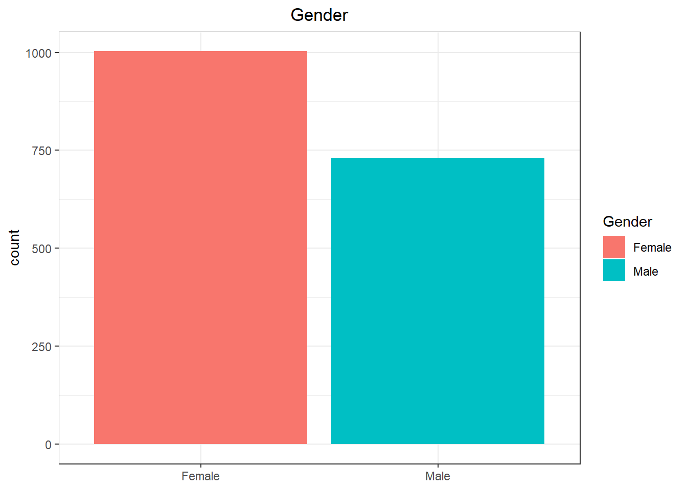
# age
ggplot(BFI2,
aes(Age)) +
geom_histogram(bins = 12, fill = 'coral1', col='white') +
theme_bw() +
ggtitle("Age") +
theme(plot.title = element_text(hjust=0.5),
axis.title.x = element_blank())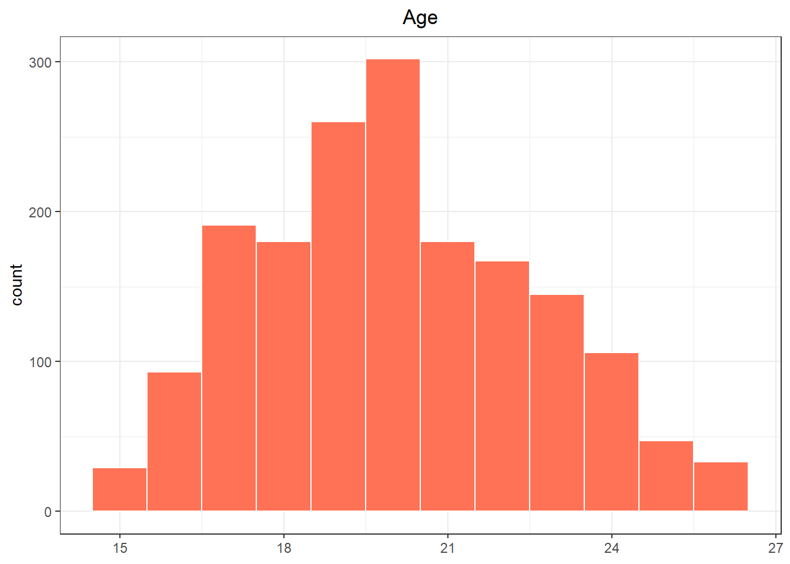
# educ
ggplot(educ, aes(x=reorder(Education, +Count), y=Count, fill = Education)) +
geom_bar(stat = "identity") +
labs(title = "Education") +
theme_bw() +
theme(legend.position="none",
plot.title = element_text(hjust=0.5),
axis.title.y = element_blank()) +
coord_flip()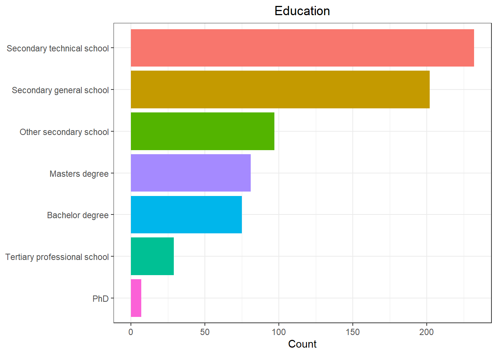
# facet scores
facets <- unique(substr(names(BFI2[1:60]), 2,5))
BFI2_facets <- as.data.frame(sapply(facets, function(xx) rowSums(BFI2[,grep(xx, names(BFI2)), drop=FALSE])))
# domain scores
domains <- unique(substr(names(BFI2[1:60]), 2, 2))
BFI2_domains <- as.data.frame(sapply(domains, function(xx) rowSums(BFI2_facets[,grep(xx, names(BFI2_facets)), drop=FALSE])))
BFI2_domains <- cbind(BFI2_domains, BFI2$Gender, BFI2$Educ)
colnames(BFI2_domains)[6:7] <- c("Gender", "Education")# item scores to long format
BFI2_long <- BFI2 %>%
mutate(pid = row_number()) %>%
pivot_longer(starts_with("i"), names_to ="Item", values_to = "Score") %>%
mutate(Domain = substr(Item, 2, 2),
Facet = substr(Item, 2, 5))# domain scores to long format
BFI2_domains_long <- BFI2_domains %>%
mutate(pid = row_number()) %>%
pivot_longer(cols = 1:5, names_to = "Domain", values_to = "Score") %>%
mutate(Domain = as.factor(Domain))
# descriptive stats for domains
describeBy(BFI2_long$Score, group=BFI2_long$Domain)##
## Descriptive statistics by group
## group: A
## vars n mean sd median trimmed mad min max range skew kurtosis se
## X1 1 20796 3.61 1.12 4 3.69 1.48 1 5 4 -0.58 -0.51 0.01
## --------------------------------------------------------------------------------------------------------------------------------------------------
## group: C
## vars n mean sd median trimmed mad min max range skew kurtosis se
## X1 1 20796 3.23 1.15 3 3.25 1.48 1 5 4 -0.23 -0.88 0.01
## --------------------------------------------------------------------------------------------------------------------------------------------------
## group: E
## vars n mean sd median trimmed mad min max range skew kurtosis se
## X1 1 20796 3.3 1.15 3 3.33 1.48 1 5 4 -0.29 -0.82 0.01
## --------------------------------------------------------------------------------------------------------------------------------------------------
## group: N
## vars n mean sd median trimmed mad min max range skew kurtosis se
## X1 1 20796 2.97 1.18 3 2.96 1.48 1 5 4 0.03 -1 0.01
## --------------------------------------------------------------------------------------------------------------------------------------------------
## group: O
## vars n mean sd median trimmed mad min max range skew kurtosis se
## X1 1 20796 3.62 1.12 4 3.71 1.48 1 5 4 -0.56 -0.5 0.01# descriptive stats grouped by domain & gender
describeBy(BFI2_domains_long$Score, group = list(BFI2_domains_long$Domain, BFI2_domains_long$Gender))##
## Descriptive statistics by group
## : A
## : Female
## vars n mean sd median trimmed mad min max range skew kurtosis se
## X1 1 1003 44.3 6.37 45 44.54 5.93 20 60 40 -0.42 0.22 0.2
## --------------------------------------------------------------------------------------------------------------------------------------------------
## : C
## : Female
## vars n mean sd median trimmed mad min max range skew kurtosis se
## X1 1 1003 39.23 8.48 40 39.38 8.9 12 60 48 -0.17 -0.45 0.27
## --------------------------------------------------------------------------------------------------------------------------------------------------
## : E
## : Female
## vars n mean sd median trimmed mad min max range skew kurtosis se
## X1 1 1003 39.51 8.18 40 39.53 8.9 18 59 41 -0.03 -0.55 0.26
## --------------------------------------------------------------------------------------------------------------------------------------------------
## : N
## : Female
## vars n mean sd median trimmed mad min max range skew kurtosis se
## X1 1 1003 37.61 8.76 37 37.56 10.38 13 59 46 0.03 -0.54 0.28
## --------------------------------------------------------------------------------------------------------------------------------------------------
## : O
## : Female
## vars n mean sd median trimmed mad min max range skew kurtosis se
## X1 1 1003 43.81 7.59 44 43.95 7.41 22 60 38 -0.18 -0.36 0.24
## --------------------------------------------------------------------------------------------------------------------------------------------------
## : A
## : Male
## vars n mean sd median trimmed mad min max range skew kurtosis se
## X1 1 730 41.95 7.11 42 42.1 7.41 19 60 41 -0.23 -0.08 0.26
## --------------------------------------------------------------------------------------------------------------------------------------------------
## : C
## : Male
## vars n mean sd median trimmed mad min max range skew kurtosis se
## X1 1 730 38.09 8.11 38 38.12 7.41 12 60 48 -0.02 -0.2 0.3
## --------------------------------------------------------------------------------------------------------------------------------------------------
## : E
## : Male
## vars n mean sd median trimmed mad min max range skew kurtosis se
## X1 1 730 39.71 8.47 40 39.83 8.9 17 59 42 -0.13 -0.54 0.31
## --------------------------------------------------------------------------------------------------------------------------------------------------
## : N
## : Male
## vars n mean sd median trimmed mad min max range skew kurtosis se
## X1 1 730 32.92 9.24 32 32.74 8.9 12 60 48 0.24 -0.16 0.34
## --------------------------------------------------------------------------------------------------------------------------------------------------
## : O
## : Male
## vars n mean sd median trimmed mad min max range skew kurtosis se
## X1 1 730 43.04 7.9 43 43.08 8.9 19 60 41 -0.07 -0.46 0.29# plot of domain distributions & gender
ggplot(BFI2_domains_long, aes(x=Score, y=Domain)) +
geom_density_ridges(aes(group = interaction(Domain, Gender), fill = Gender, linetype=Gender),
position = "identity",
alpha = 0.7,
size = 1) +
labs(title = "Distribution of Big5 domains", x = "Score") +
scale_y_discrete(labels=c("Open-Mindedness", "Negative Emotionality",
"Extraversion", "Conscientiousness", "Agreeability")) +
theme_bw() +
theme(axis.title.y = element_blank(),
plot.title = element_text(hjust=0.5))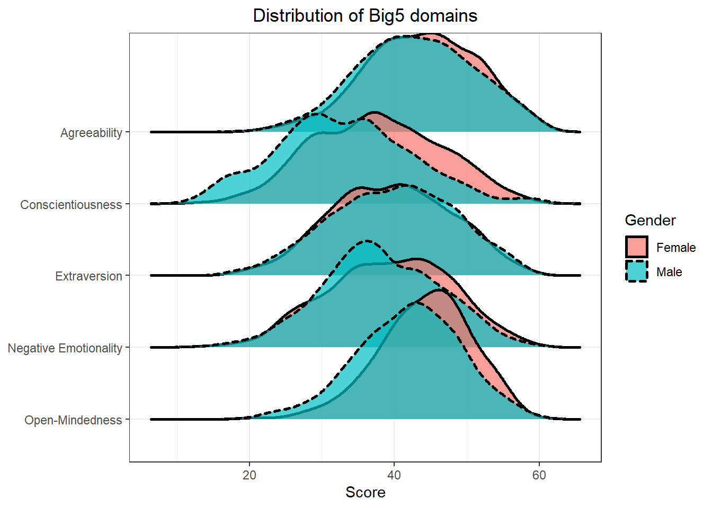
We decided to work with the BFI2dataset from the ShinyItemAnalysis package. The BFI2dataset contains responses of \(1733\) Czech respondents to the Big Five Inventory 2, as well as information about their age, education, and gender. The BFI2 items are scored using a 5-point Likert scale. I used alternative item names provided in the dataset documentation and I set both the Gender and Educ variables to factors with appropriate labels. Circa \(57.9 \%\) of the respondents are female, \(42.1 \%\) are male. Notably, the dataset only covers an age group of people between \(15\) and \(26\) with a mean of \(20.06\) years. Out of the \(723\) respondents who specified their highest level of attained education – \(32.1 \%\) finished a secondary technical school, \(27.9 \%\) finished a secondary general school, \(13.4 \%\) finished another secondary school, \(11.2 \%\) obtained a Masters degree, \(10.4 \%\) obtained a Bachelor degree, \(4 \%\) finished a tertiary professional school and finally, \(1 \%\) obtained a PhD.
When observing the distribution of scores grouped by the Big5 domains it can be stated that they do not follow a normal distribution – they are multimodal. Open-Mindedness has the highest mean in this sample (\(43.48\)) followed by Agreeability (\(43.31\)), Extraversion (\(39.59\)), Conscientiousness (\(38.75\)) and Negative Emotionality (35.63). Negative Emotionality exhibits the highest standard deviation, which points to relatively spread out responses on the corresponding items. It could be hypothesized, that these results are, to a certain extent, typical of the given age group (e.g. high Open-Mindedness). On average, female respondents in this sample scored higher than males in all dimensions except Extraversion. The most distinct gender differences in this sample seem to emerge along the dimensions of Negative Emotionaliy (\(\mu_{(F)} = 37.61\), \(\mu_{(M)} = 32.92\)) and Agreeability (\(\mu_{(F)} = 44.3\), \(\mu_{(M)} = 41.95\)).
The Big Five is a 5-factor model of personality – therefore, inventories based on this model measure 5 personality traits. The test scores are primarily intended to capture and summarize important personality differences, which is especially useful in psychological research. The Neuroticism/Negative Emotionality scale is particularly beneficial in clinical psychology. Big Five inventories can also be utilized in career counseling (identifying personal strengths) or in candidate assessment (comparing candidate’s profile to an ideal one). Apart from the broad 5 personality dimensions, Big Five inventories generally also contain more specific subscales (e.g. Sociability) which allow for more precise predictions of behavior.
Since the BFI2 is a self-report inventory, evidence of construct validity could be obtained by examining rater-concordance between the respondents and their friends, or between respondents and experts (psychiatrists, clinical psychologists). Test content validity could be determined by experts’ ratings of the importance/suitability of the individual items.
Evidence for the convergent validity of the Big Five could be obtained by correlating the domain scores with other psychological tests aiming to measure the same or at least similar constructs. One could for example compare the BFI2 results to reults of the NEO PI-R. Furthermore, one could for example expect the subscale of Negative Emotionality to correlate with measures of anxiety (e.g. Generalized Anxiety Disorder Assessment) and depression (Beck’s Depression Inventory). Open-Mindedness should presumably correlate with measures of creativity etc.
Discriminant validity of the BFI2 could be explored by comparing the results of its subscales to constructs, that should not be highly correlated to said subscales. Going back to the previously mentioned GAD and BDI as correlates of the Negative Emotionality subscale, one should make sure that the correlations aren’t extremely high, and that the tests aren’t measuring identical constructs.
Concurrent validity could be assessed by comparing the BFI2 results with another personality test based on the Big Five model administrated at the same time.
We could obtain evidence for the BIF2’s predictive validity for example by correlating Conscientiousness scores of students with their future GPAs, or scores of employees with their future job performance. Negative Emotionality could serve as a predictor of certain clinical diagnoses (anxiety, personality disorders, mood disorders).
An example of evidence for incremental validity of the BFI2 could be the comparison of the predictive value of Conscientiousness scores (in terms of future job performance) to other measures of candidate assessment, such as an assessment centre.
# item correlation matrix
corP <- psych::polychoric(BFI2[1:60])
# item correlation plot
ShinyItemAnalysis::plot_corr(BFI2[1:60], cor = "polychoric",
clust_method = "ward.D2",
n_clust = 5,
shape = 'square',
line_col = 'red',
fill = 'red',
fill_alpha = 0.1) +
theme(axis.text=element_text(size=12))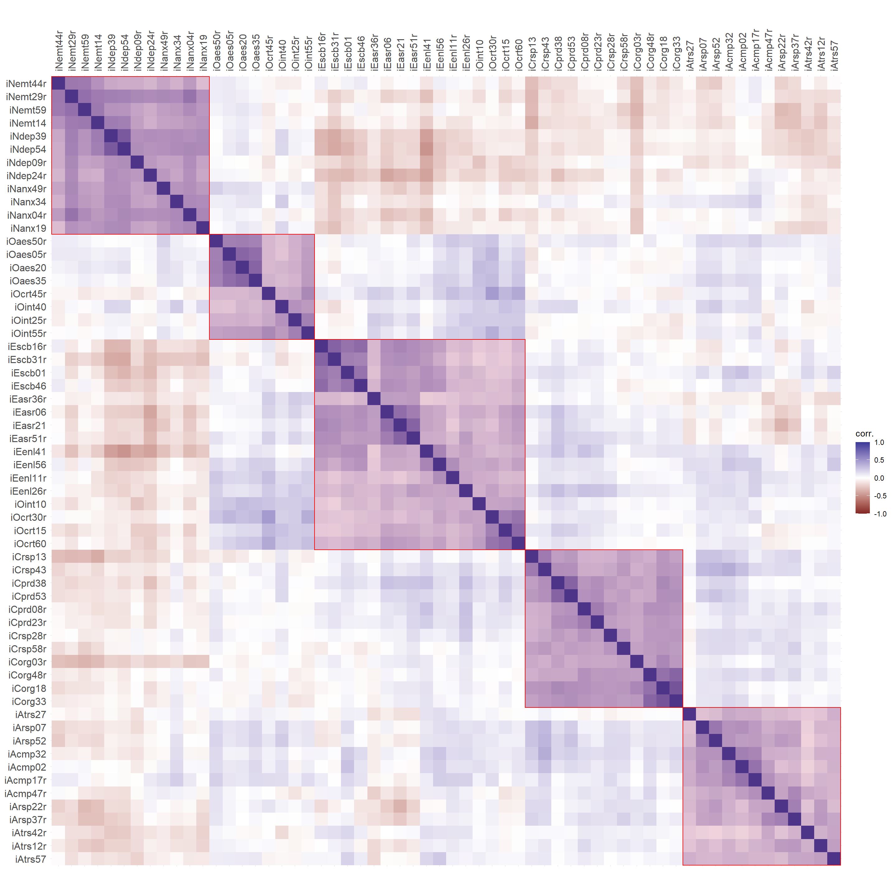
# factor correlation matrix
cor(BFI2_domains[1:5], method="spearman")## E A C N O
## E 1.00000000 0.05112188 0.16267397 -0.315039775 0.288366364
## A 0.05112188 1.00000000 0.23422490 -0.166753129 0.134280238
## C 0.16267397 0.23422490 1.00000000 -0.178877918 0.042422714
## N -0.31503978 -0.16675313 -0.17887792 1.000000000 -0.006434327
## O 0.28836636 0.13428024 0.04242271 -0.006434327 1.000000000# factor correlation plot
ShinyItemAnalysis::plot_corr(BFI2_domains[1:5],
cor = "spearman",
shape = 'square',
labels = TRUE,
labels_size = 4)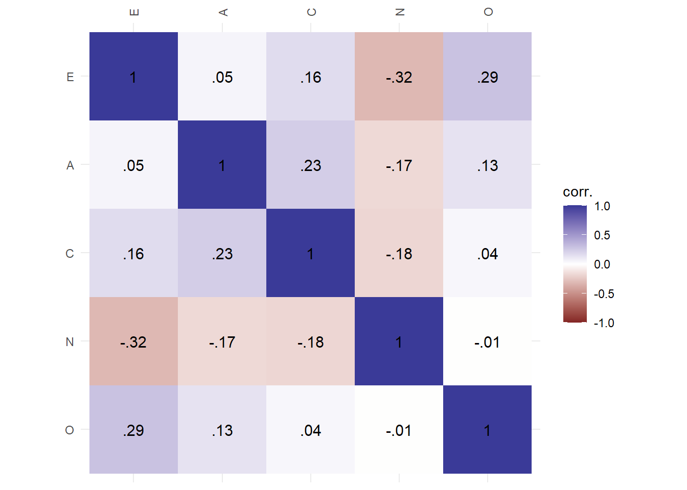
# extraversion subscales correlation matrix
BFI2 %>%
select(seq(1, 56, 5)) %>%
plot_corr(corr = "polychoric",
clust_method = "ward.D2",
n_clust = 3,
shape = 'square',
labels = TRUE,
labels_size = 4,
line_col = 'red',
fill = 'red',
fill_alpha = 0.1)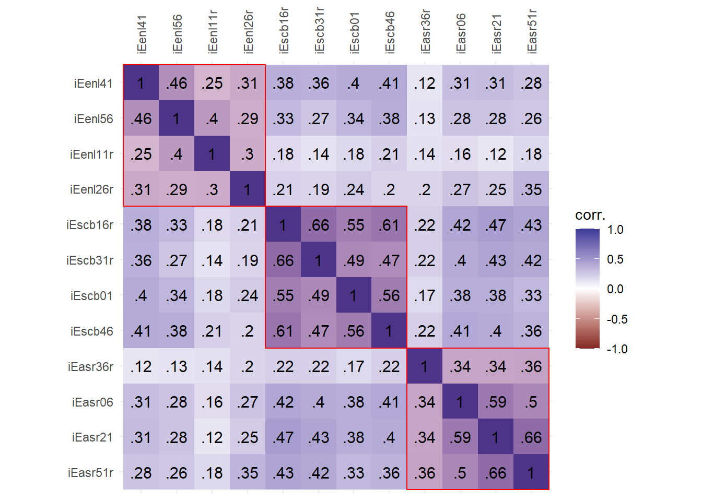
# agreeability subscales correlation matrix
BFI2 %>%
select(seq(2, 57, 5)) %>%
plot_corr(corr = "polychoric",
clust_method = "ward.D2",
n_clust = 3,
shape = 'square',
labels = TRUE,
labels_size = 4,
line_col = 'red',
fill = 'red',
fill_alpha = 0.1)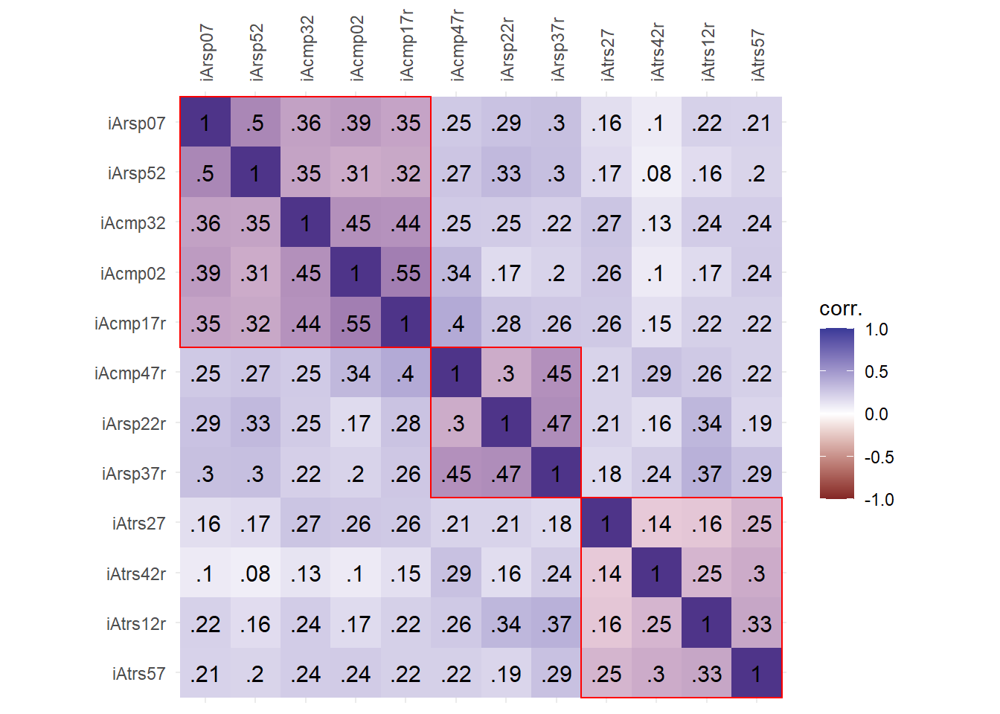
# conscientiousness subscales correlation matrix
BFI2 %>%
select(seq(3, 58, 5)) %>%
plot_corr(corr = "polychoric",
clust_method = "ward.D2",
n_clust = 3,
shape = 'square',
labels = TRUE,
labels_size = 4,
line_col = 'red',
fill = 'red',
fill_alpha = 0.1)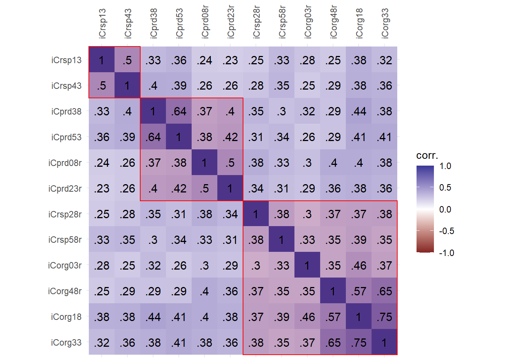
# negative emotionality subscales correlation matrix
BFI2 %>%
select(seq(4, 59, 5)) %>%
plot_corr(corr = "polychoric",
clust_method = "ward.D2",
n_clust = 3,
shape = 'square',
labels = TRUE,
labels_size = 4,
line_col = 'red',
fill = 'red',
fill_alpha = 0.1)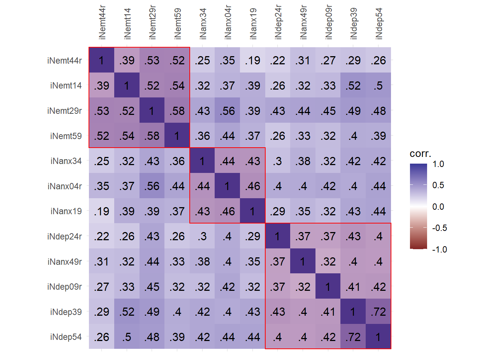
# open-mindedness subscales correlation matrix
BFI2 %>%
select(seq(5, 60, 5)) %>%
plot_corr(corr = "polychoric",
clust_method = "ward.D2",
n_clust = 3,
shape = 'square',
labels = TRUE,
labels_size = 4,
line_col = 'red',
fill = 'red',
fill_alpha = 0.1)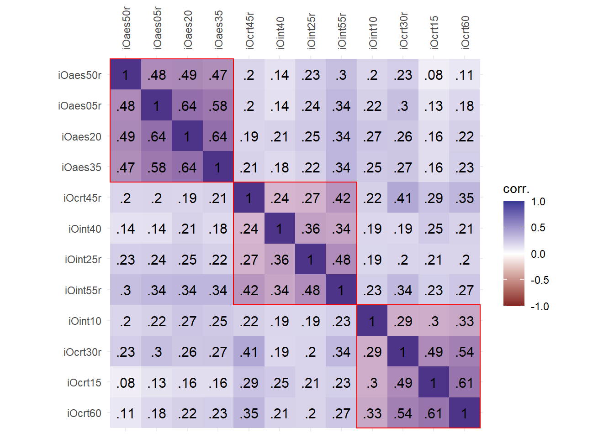 Because the BFI2 does not measure a single construct, its items should not all intercorrelate. Items should intercorrelate within the framework of the corresponding domain and facet. Although the item correlation heat-map is a bit cluttered, it shows 5 clusters roughly representing the five BFI2 domains. There is an overlap of Extraversion and Open-Mindedness items. Looking at the domain correlations confirms this, as there is a positive correlation (\(\rho=0.29\)) between Extraversion and Open-Mindedness. Extraversion is also negatively correlated to Negative Emotionality (\(\rho=-0.32\)). Correlation heatmaps for the respective dimensions show that there are a few ‘unexpected’ high correlations – Respectfulness correlates with Compassion (Agreeability), Responsibility correlates with Organization (Conscientiousness), Depression correlates with Anxiety (Negative Emotionality).